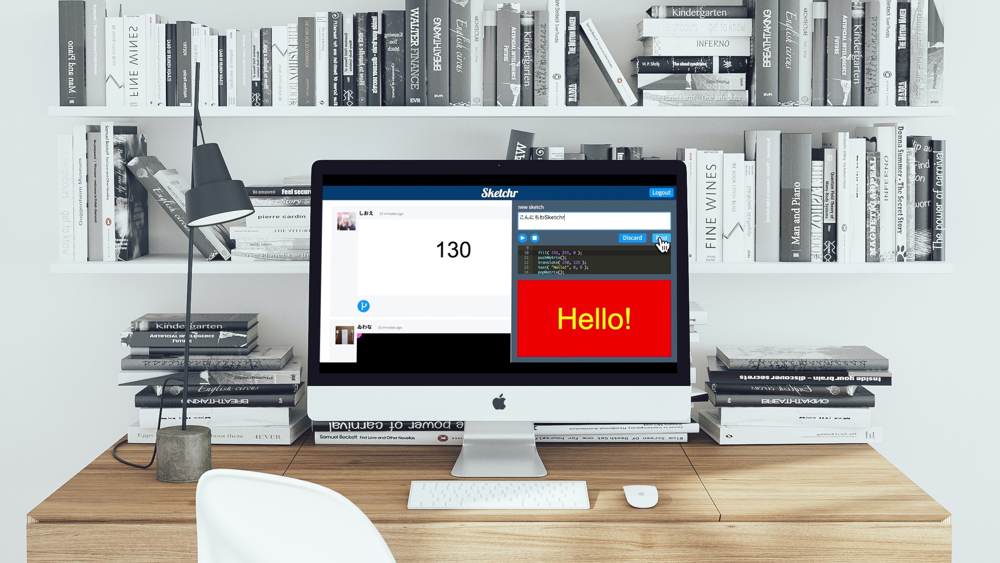

Sketchr

SketchrはWeb上でProcessingプログラミングを共有してコミュニケーションできるプログラミングSNSです。 スケッチ（プログラム）の共有、他人が共有したソースコードの編集がブラウザ上で可能です。 タイムライン上にはスケッチの実行結果が表示されます。 Twitter APIを用いてアカウント管理をしています。
3名で役割分担をして開発しました。 担当箇所は画面設計、CSSの一部、PHPです。
HTML,CSS,JavaScript,PHP